.NET 10, YARP, alan odaklı tasarım, dağıtık tutarlılık, olay tabanlı mesajlaşma, Saga orkestrasyonu ve kademeli modernizasyon üzerine uygulamalı bir mimari inceleme.
*Erkin Emre Yılmaz*
Bir sistemin mimarisi değişirken müşterilerine hizmet vermeyi sürdürmesi mümkündür. Bu gereksinim, modernizasyonu yalnızca kod taşıma işi olmaktan çıkarır. Hangi bileşenin isteği karşılayacağı, hangi veritabanının yetkili olduğu, kısmi hatadan sonra ne olacağı ve geçişin geri alınıp alınamayacağının nasıl anlaşılacağı açıkça belirlenmelidir. StranglerForge, bu soruları incelemek için geliştirilmiş, çalıştırılabilir bir .NET 10 referans uygulamasıdır. Altı modüllü bir ticaret monolitiyle başlar; Catalog, Inventory ve Orders'ın çıkarıldığı, Customers, simüle Payments ve Notifications'ın ise LegacyCommerce içinde kaldığı bilinçli bir hibrit mimariye ulaşır.
Bu çalışma gerçek bir müşterinin üretim ortamı geçişi değildir. CI ve entegrasyon testleri belirli davranışları doğrular. Üretim iş yükü kapasitesini, Kubernetes üzerinde çalışan bir kurulumun güvenilirliğini veya gerçek bir satıcının güvenlik düzeyini kanıtlamaz. Tasarım kararlarını değerlendirirken bu sınırı korumak gerekir.
Bir monolitin kullandığı kütüphaneleri yenilemek, dağıtım veya veri sahipliği sınırlarını değiştirmez. LegacyCommerce başlangıçta Customers, Catalog, Inventory, Orders, Payments ve Notifications modüllerini SQL Server kullanan tek bir ASP.NET Core uygulamasında barındırıyordu. Modüllerin ayrı alan kavramları vardı; ancak aynı süreç ve veritabanını paylaşıyorlardı. Stok rezervasyonu, ödeme kararı, sipariş güncellemesi ve bildirim, ayrı servisler arasında ağ çağrısı gerektirmeden yönetilebiliyordu.
Modül çıkarıldığında hata modeli değişir. Rezervasyon tamamlanırken çağıran taraf zaman aşımına uğrayabilir. Ödeme gerçekleşmiş, ancak yanıt kaybolmuş olabilir. Mesaj iki kez yayımlanabilir veya uygulama mesajı yayımlamadan kapanabilir. Bu sırada API istemcileri aynı yolları ve yanıt sözleşmelerini bekler. Geçmiş kayıtlarla devam eden işlemleri birbirine bağlayan ürün ve sipariş kimlikleri gelişigüzel değiştirilemez.
Tüm sistemi tek seferde yeniden yazmak bu riskleri tek bir geçiş anında toplar. Eski sistemin güvenle işletilemediği veya iş alanının bütünüyle değiştiği durumlarda bu yol haklı olabilir. Burada ise hangi davranışın neden değiştiğini ayırt etmeyi zorlaştırır. StranglerForge modernizasyonu açık veri sahipliği geçişleri dizisi olarak ele alır. Her geçiş, uyumlu API, veri taşıma, tek yetkili yazıcı, doğrulama noktası ve kurtarma prosedürü gerektirir.
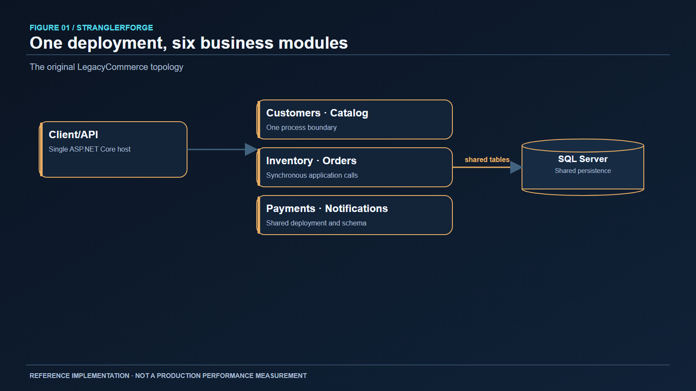
Şekil 1. Başlangıç: tek dağıtılabilir uygulama ve paylaşılan SQL Server. Kodda modül sınırları olsa da dağıtım ile kalıcılık birbirine bağlıdır.Martin Fowler'ın anlattığı Strangler Fig deseni, eski ve yeni uygulamaların bir yönlendirme sınırının arkasında birlikte çalışmasını sağlar. Bu projede sınır, ASP.NET Core ters vekili YARP'tır. İstemciler alıştıkları /api yollarını çağırmaya devam eder; ağ geçidi seçili istekleri çıkarılmış servise yönlendirir. Eski uygulama, henüz taşınmamış modüller ve açıkça desteklenen kurtarma yolları için çalışır durumda kalır.
İlerlemenin anlamlı ölçüsü süreç sayısı değil, yetkili hale gelen iş yeteneğidir. Catalog trafiğini yeni servise göndermeden önce ürün verisi içeri alınmalı, kimlikler korunmalı, yazmalar dondurulmalı veya uzlaştırılmalı ve yeni veritabanı sahip olarak belirlenmelidir. Yalnızca vekil yapılandırmasını değiştirmek bunları yapmaz. Geri alma kararı da eski SQL satırlarının güncel olup olmadığını dikkate almalıdır. PostgreSQL yazmaları kabul etmeye başladıktan sonra okumaları SQL Server'a döndürmek, görünüşte sağlıklı ama yanlış veri sunabilir.
Bu desen, genel API sözleşmeleri sabit kalırken bounded context'ler bağımsız taşınabildiğinde değerlidir. Eski sistem eşzamanlı işletilemiyorsa, iş alanı bütünüyle terk ediliyorsa veya küçük ve tutarlı bir monolit dağıtım ve ölçekleme gereksinimlerini zaten karşılıyorsa daha az uygun olabilir. Mikroservis sayısı kendi başına bir başarı ölçütü değildir.
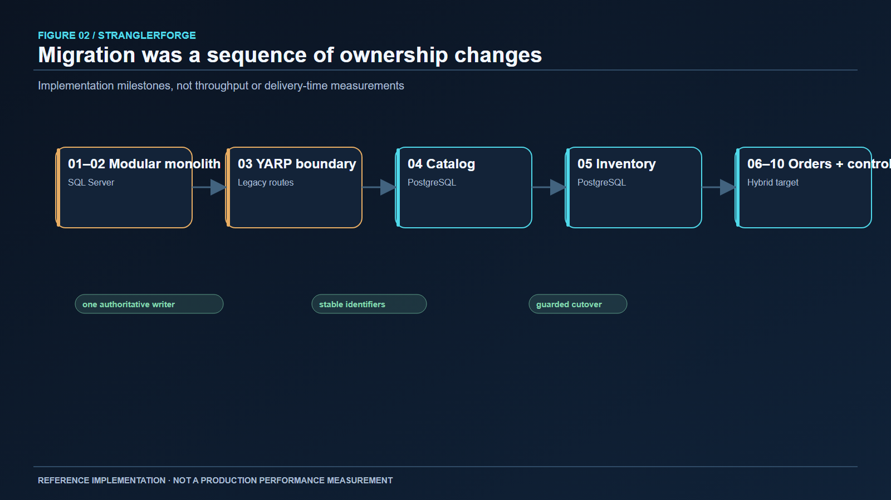
Şekil 2. Aşamalar hız veya performans kazanımı ölçümü değil, veri ve trafik sahipliği değişimleridir. Customers, Payments ve Notifications monolitte kalır.Referans uygulama altı boş servis iskeleti oluşturarak başlamadı. LegacyCommerce, alan davranışı ile uygulama kullanım senaryolarını HTTP bağlama ve EF Core kalıcılığından ayıran modüler bir monolit olarak kuruldu. Böylece dağıtık sınır eklenmeden önce müşteri kaydı, ürün sorgusu, stok yönetimi, sipariş işleme, simüle ödeme ve bildirim kayıtları çalışan bir temel oluşturdu.
Bu sıra alan odaklı tasarıma ilişkin pratik bir noktayı gösterir: bounded context yalnızca bir namespace değil, model ve sahiplik sınırıdır. Catalog ürün kimliği ile fiyatı; Inventory stok miktarı ile rezervasyonları; Orders sipariş durumunu sahiplenir. Bu örnekte Payments yetkilendirme kararı verir, Notifications müşteri sonucunu kaydeder. İlk dağıtımda bu kavramlar aynı süreçte koordine edilebiliyordu. Çıkarıldıktan sonra açık HTTP sözleşmeleri, sabit kimlikler ve kısmi başarı kuralları gerektirirler.
Monolitin çalışmasını sürdürmesi geçişin temel koşuludur. Ağ geçidi, değişmemiş yetenekleri bilinen uygulamaya yönlendirirken yenilikler ayrı ayrı doğrulanabilir. Son mimari üç etkin context için hâlâ monolite bağımlıdır. Sırf “tamamlanmış geçiş” diyebilmek için monoliti kaldırmak, bu context'leri yeniden kurmayı ve operasyonel davranışlarını kanıtlamayı gerektirirdi.
YARP, rota ve küme yapılandırmasına sahip, programlanabilir bir ASP.NET Core ters vekilidir. StranglerForge genel API yüzeyini korurken hedefleri değiştirmek için kullanır. Ağ geçidi istek yönlendirmesini, geçiş bayraklarını, ortak otorite kontrollerini ve koruyucu ilkeleri yönetir. Fiyat hesaplamaz, ödeme sonucuna karar vermez, stok ayırmaz; bunlar ilgili alanların sorumluluğudur.
Basitleştirilmiş bir yapılandırma örneği:
{
"ReverseProxy": {
"Routes": {
"catalog": {
"ClusterId": "catalog",
"Match": { "Path": "/api/products/{**catch-all}" }
}
},
"Clusters": {
"catalog": {
"Destinations": {
"primary": { "Address": "http://catalog:8080/" }
}
}
}
}
}Depodaki gerçek rota kümesi daha kapsamlıdır ve geçiş denetimi hangi kümenin kullanılabileceğini sınırlar. Örnek yalnızca YARP'ın rota-küme ilişkisini gösterir; doğrudan dağıtım yapılandırması değildir. Bir isteği Orders, Inventory ve monolit boyunca izleyebilmek için korelasyon bağlamı vekil sıçramasında korunmalıdır. Zaman aşımları, hazır olma kontrolleri ve eşzamanlılık sınırları da önemlidir; aksi halde ağ geçidi bağımlılık hatasını büyütebilir.
Ağ geçidi ayrıca yönetişim riski yaratır: rota dosyası, modern servis yazma sahipliğini devralmışken eski sistemi güvenli hedef gibi gösterebilir. StranglerForge bu riski sahiplik durumunu bilen geçiş kuralları, paylaşılan PostgreSQL otoritesi, sürüm kontrolleri ve rota doğrulamasıyla ele alır. İş doğruluğu, yönlendirme ve veri düzlemlerinde birlikte korunur.
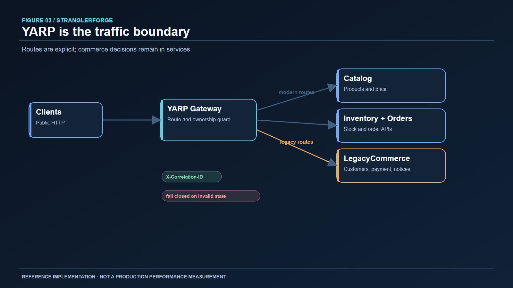
Şekil 3. Ağ geçidi genel erişim sınırıdır; ticaret kurallarının alternatif uygulaması değildir.Catalog, ürün okumaları görece kolay ayrıştırılabildiği için uygun bir ilk adımdır. Bununla birlikte ürün kimliklerine stok ve siparişler de başvurur. Servis kendi PostgreSQL veritabanına, API'sine ve migration'larına sahiptir. SQL Server içe aktarma aracı ürün kayıtlarını kimlikleri koruyarak taşır. Yeni ürün kimlikleri üretmek, çalışan monolitteki ilişkileri ve daha sonraki Inventory taşınmasını bozardı.
Monolit artık Catalog tablolarına doğrudan erişmez. Ürün sorgusu için HTTP sınırını kullanır; bu anti-corruption layer dış ürün bilgisini sipariş akışının ihtiyaç duyduğu verilere çevirir. Inventory de ürün varlığını Catalog HTTP üzerinden doğrular. Böylece servis veritabanı, entegrasyon API'si gibi kullanılmaz. Buna karşılık ağ bağımlılığı oluşur; zaman aşımı, sağlık durumu ve hata davranışı açıkça ele alınmalıdır.
Geçiş bilinçli olarak prosedüre bağlıdır. İçe aktarma ve doğrulama, yazma dondurması altında yapılır; yeni yazıcı ancak kimlikler ve veri kontrol edildikten sonra yetkili olur. Eski SQL satırları geçmiş için kalır ama canlı alternatif kaynak değildir. Depo, geliştirme veritabanında stok tarafından başvurulan ve Catalog'da eksik olan 21 ürün GUID'inin, mevcut 25 ürüne dokunmadan eklendiğini; işlemin tekrarında sıfır ekleme olduğunu belgeler. Bu tek bir geliştirme geçişinin kanıtıdır, evrensel bir içe aktarma garantisi değildir. Amaç tutarsız referansları sahiplik değişiminden önce uzlaştırmaktır.
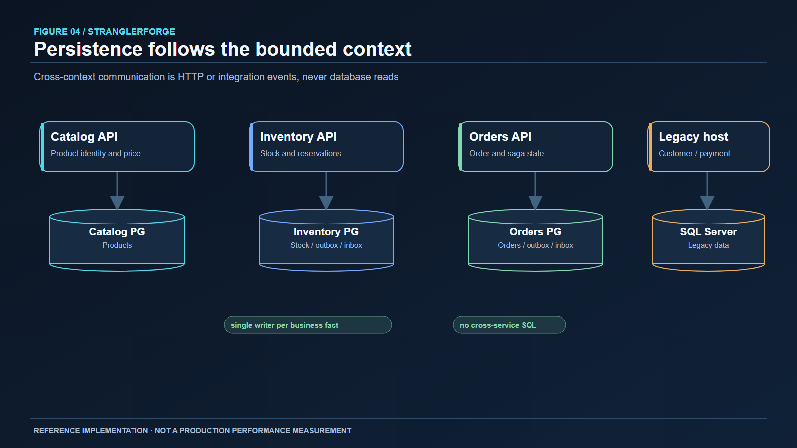
Şekil 4. Her context için tek yetkili yazıcı. Context'ler arası erişim başka bir servisin tabloları yerine sözleşmelerden geçer.Inventory'nin çıkarılması yerel işlemi dağıtık iş akışına dönüştürür. PostgreSQL veritabanı stok, rezervasyon, düzeltme ve denetim durumunu sahiplenir. Orders, siparişe bağlı sabit bir kimlikle rezervasyon ister. Yeniden denenen istek bu rezervasyonu bulabilir; stok iki kez ayrılmaz.
Temel değişmez, eşzamanlı rezervasyonlarla kullanılabilir stok miktarının negatife düşmemesidir. Uygulama bir veritabanı işlemi içinde koşullu güncelleme yapar: stok satırı yalnızca Quantity - Reserved istenen miktara eşit veya ondan büyükse güncellenir. Aynı işlem rezervasyonu ve dışa giden olayı kaydeder. Yarışı kaybeden istek önceki okumaya dayanamaz; yetkili kontrol koşullu yazmadır. Tekillik kısıtları ve çakışma işleme, yinelenen rezervasyon girişimlerini ve serileştirme veya deadlock durumlarını karşılar.
Rezervasyon durumu da önemlidir. Başarılı ödeme onaya, kesin ödeme reddi serbest bırakmaya gider. Zaman aşımı ret anlamına gelmez: yanıt kaybolurken ödeme tamamlanmış olabilir. Belirsizlikte stoğu otomatik serbest bırakmak aynı birimi ikinci kez satma riski yaratır. StranglerForge sonucu inceleme için beklemede tutar; kalıcı sipariş durumu daha sonra devam veya uzlaştırma imkânı verir.
Taşıma aracı, yetkili trafik geçmeden önce stok toplamlarını ve kaynak kararlılığını doğrular. README, geliştirme geçişinde 43 stok satırı ve sıfır bekleyen rezervasyonun doğrulandığını, ardından ağ geçidi üzerinden iş akışlarının denendiğini kaydeder. Bu sayılar belirli bir geliştirme veritabanına ve ana aittir. Inventory PostgreSQL üzerinde yazmaya başladıktan sonra içe aktarma, hedef yeni bir kopyaymış gibi tekrar çalıştırılmamalıdır.
RabbitMQ ve MassTransit entegrasyon olayları için kullanılır; ancak belirleyici karar transactional outbox'tır. Stok işleminin commit edildiğini, InventoryReservedV1 broker'a ulaşmadan sürecin kapandığını düşünelim. Stok değişikliği kalıcı, olay eksiktir. Sırayı ters çevirmek de güvenli değildir: yayımlanan olay tüketilirken stok işlemi geri alınabilir. Bu tasarımda PostgreSQL ile RabbitMQ arasında atomik commit yoktur.
Bu nedenle Inventory işlemi iş durumunu ve outbox kaydını birlikte yazar. Dağıtıcı olayı daha sonra yayımlar. Broker erişilemiyorsa stok değişikliği ve olay yeniden gönderim için kalıcı kalır. Yayım birden fazla kez gerçekleşebileceğinden tüketiciler, inbox kayıtları ve sabit olay kimlikleriyle yinelenen iş etkilerini engeller. Bu, idempotent işlemeyle birlikte en az bir kez teslimattır; dağıtık anlamda tam bir kez teslimat değildir.
Domain event ile integration event arasındaki ayrım yararlıdır. İlki context içindeki iş olgusunu anlatır; ikincisi diğer context'ler için sürümlenmiş bir sözleşmedir. Yeniden oynatma ve teşhis için yeterli kimlik ile korelasyon taşımalı, iç aggregate'i bütünüyle dışa açmamalıdır. Depodaki canlı RabbitMQ CI kontrolleri outbox yeniden gönderimini, yinelenmenin bastırılmasını, retry sınırının tükenmesini, hata kuyruğunu ve hata giderildikten sonra işlemeyi kapsar. Zehirli mesajın elle yeniden oynatılması henüz doğrulanmamıştır.
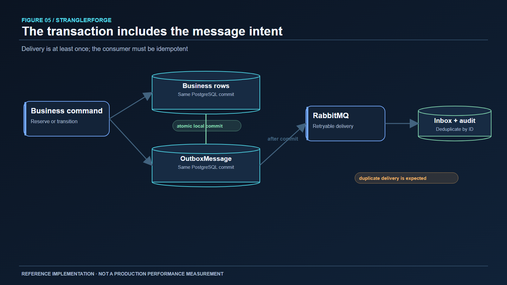
Şekil 5. Outbox commit ile yayım arasındaki boşluğu kapatır; inbox yinelenen teslimatı karşılar. Hiçbiri broker'ı dağıtık işlem koordinatörüne dönüştürmez.Orders üçüncü çıkarılmış context'tir. PostgreSQL veritabanı sipariş kayıtları ile iş akışının ilerlemesini sahiplenir. Kalıcı uygulama işçisi OrderSagaRunner, siparişi submitted, inventory pending, inventory reserved, payment pending ve son veya telafi durumları boyunca ilerletir. İlerleme veritabanında tutulur: süreç yeniden başlarsa işçi bekleyen geçişlere, bellekteki çağrı yığınına güvenmeden devam edebilir.
Sıra bilerek açıktır. Orders müşteri varlığını monolitten, ürün fiyatını Catalog'dan doğrular. Siparişi oluşturur, Inventory'den stok rezervasyonu ister, monolitte simüle ödeme yetkilendirmesi talep eder ve yetkilendirme başarılıysa rezervasyonu onaylar. Kesin ret halinde telafi durumuna geçer, rezervasyonu serbest bırakır ve iptal sonucunu kaydeder. Son bildirim kaydı sipariş kimliğiyle ilişkilidir; tekrar edilen adım ikinci bir iş etkisi oluşturmaz. İç katılımcı uç noktaları idempotency kimlikleri ve ayrı kimlik doğrulama sınırları kullanır.
Gerçekçi bir hata, ödeme HTTP çağrısında zaman aşımıdır. Ödemeyi başarısız sayıp stoğu serbest bırakmak cazip görünür. Oysa zaman aşımı yalnızca çağıranın yanıt alamadığını gösterir; ödeme işleyicisi yetkilendirmeyi tamamlamış olabilir. Saga siparişi inceleme ve uzlaştırma için beklemede tutar, uydurma bir telafi kararı vermez. Bir diğer durum, kesin ret sonrasında serbest bırakma isteğinin zaman aşımına uğramasıdır. Telafi beklemede kalır ve idempotent serbest bırakma yeniden denenebilir. Sonuç kesinleşmeden sipariş sorunsuz iptal edilmiş gibi gösterilmemelidir.
Burada MassTransit state-machine Saga kullanılmaz. MassTransit mesajlaşma ve outbox/inbox için vardır; iş akışı kalıcı bir uygulama işçisiyle yürütülür. Küçük ve çoğunlukla doğrusal süreçte bu yaklaşım durum geçişlerini ve kurtarma noktalarını incelemeyi kolaylaştırır. Bağımsız katılımcılar ve olay dalları çoğalırsa transport odaklı bir state machine düşünülebilir. Yine de belirsiz sonuçları sınıflandırma, idempotency ve telafi tasarımı gereksinimlerini ortadan kaldırmaz.
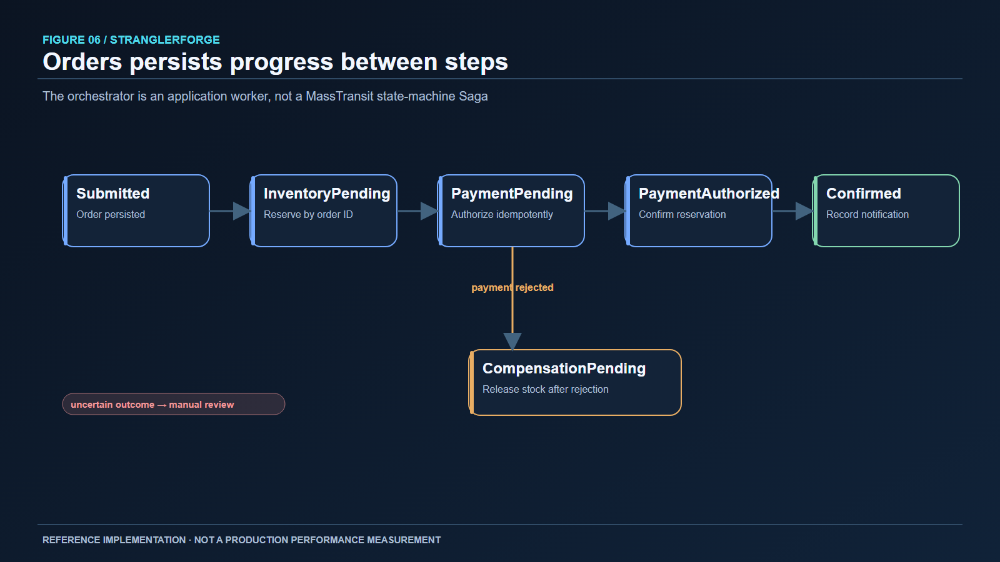
Şekil 6. Ödeme belirsizliği beklemede kalır. Kesin ret telafi yolunu başlatır.Ağ geçidi özellik bayraklarıyla yönetilen geçişi, deterministik canary seçimini ve gölge karşılaştırmayı destekler. Canary yönlendirme, uygun okuma isteklerinin kontrollü bir bölümünü yeni yola gösterebilir. Shadow read, aday yanıtı yetkili kılmadan karşılaştırabilir. Bu mekanizmaların hiçbiri aynı iş varlığı için yazmaları iki veritabanına bölmeyi meşru kılmaz.
Rota koruması bu kuralı kodlar. Bir context'in modern veritabanı yetkili olduğunda ağ geçidi yazmalar için modern yönlendirme ister; güncelliğini yitirmiş eski okumaları ve gölgeleri yasaklar. Inventory ve Orders sahipliği güçlü bir koşuldur. Ağ geçidinin ortak PostgreSQL geçiş otoritesi, kopyaları koordine eder: yönlendirilen istekler paylaşılan satır kilidi, durum geçişleri ise özel kilit alır; beklenen sürümler ve yapılandırma parmak izleri kontrol edilir. Otorite erişilemezse, kopyaların yerel dosyalara dayanarak farklı kararlar vermesi yerine geçişe duyarlı yönlendirme kapalı durumda başarısız olur.
Bunun operasyonel maliyeti vardır. Her ağ geçidi örneği güvenli yönlendirme için otorite deposuna bağımlıdır; kontrol düzlemi kesintisi kullanılabilirliği azaltabilir. Alternatif olan eski sahiplik görünümünden hizmet vermek sessiz veri bozulmasına yol açabilir. Proje sahipliğe duyarlı işlemlerde doğruluğu seçer. Canary seçiminin deterministik olması istemcinin her istekte rastgele uygulama değiştirmesini önler; fakat sabit bir yüzde veri eşdeğerliğini kanıtlamaz. Sözleşme karşılaştırması, uzlaştırma ve açık yükseltme ölçütleri yine gereklidir.
Geri almanın katmanları vardır. Uygulama imajı, veritabanı şeması ve sözleşmeler uyumluysa geri alınabilir. Ağ geçidi rotası ancak eski uygulama ilgili yeteneğin hâlâ yetkili ve güncel kaynağıysa geri döndürülebilir. Veritabanı sahipliği geçişi uzlaştırma veya kontrollü ters taşıma gerektirebilir; yalnızca rotayı çevirmek yetmez. Depo eski SQL geçmişini ve devre dışı bırakılmış veya ileten kod yollarını korur; bunların varlığı, eski okumayı güvenli kılmaz.
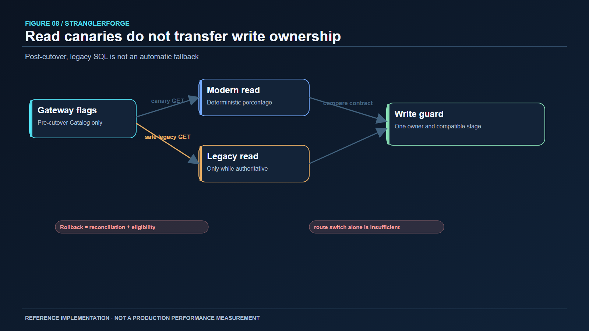
Şekil 7. Geri alma kararı yalnızca vekil rotasını değiştirebilme yeteneğine değil, veri sahipliğine ve güncelliğe dayanır.Dağıtık sistemler birleşik biçimde bozulur; dayanıklılık politikası işlemin anlamına uygun olmalıdır. Geçici hata sonrası güvenli okumayı sınırlı sayıda yeniden denemek makuldür. Yazma yapan HTTP çağrılarını otomatik yeniden denemek, uç noktanın sabit bir idempotency anahtarı ve açık yeniden oynatma davranışı yoksa etkileri çoğaltabilir. Circuit breaker ve zaman aşımları çağıranı yavaş veya bozulan bağımlılıktan korur; eşzamanlılık sınırı ağ geçidinin aşağı sistem kesintisini kaynak tükenmesine çevirmesini önler. Sağlık kontrolleri, çalışan süreç ile bağımlılıkları karşılamaya hazır süreç arasındaki farkı göstermelidir.
Proje ağ geçidini ve servisleri OpenTelemetry ile enstrümante eder. HTTP trace bağlamı ağ geçidi ve eşzamanlı servis çağrılarından geçer; entegrasyon olayları korelasyon bilgisini eşzamansız tüketicilere taşır. Dağıtım örneğinde Collector, izler için Jaeger, metrikler için Prometheus ve Grafana panoları bulunur. Sipariş izi isteğin nerede durduğunu açıklayabilir; ancak operatörün kalıcı duruma da ihtiyacı vardır: bekleyen Saga satırları, outbox birikimi, inbox kayıtları ve hata kuyrukları. Tek başına trace, stok rezervasyonunun onaylandığını veya serbest bırakıldığını kanıtlamaz.
Kabul matrisi gözlemlenebilirliği kısmen doğrulanmış olarak tanımlar. Trace aktarımı test edilmiş ve pano tanımları ayrıştırılmıştır; canlı Collector'dan arka uca akış çalıştırılmamıştır. Yapılandırma dosyalarından alarm kalitesi, izlerin tamlığı veya üretim olayı müdahalesi çıkarılamaz. Aynı nedenle gecikme ya da kapasite iyileşmesi iddiası yoktur.
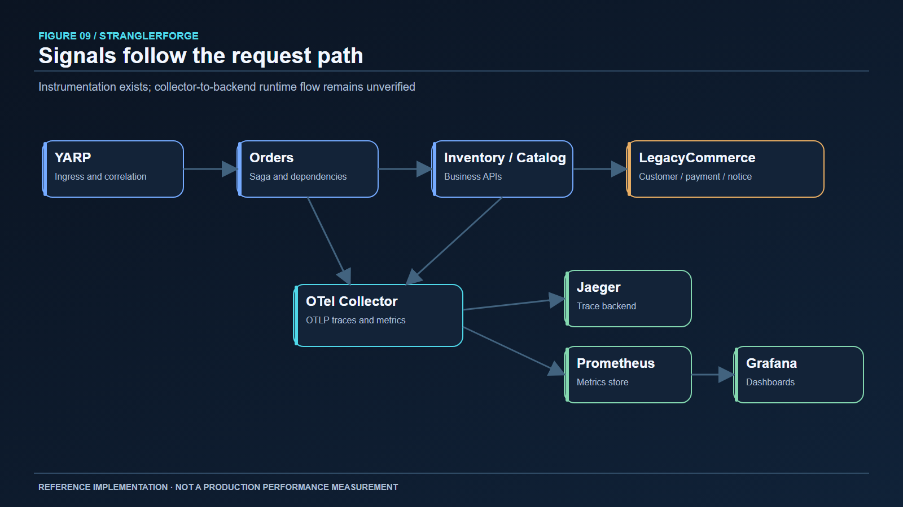
Şekil 8. Telemetri akışı açıklar; kurtarma kararlarında kalıcı Saga, outbox ve inbox durumu belirleyicidir.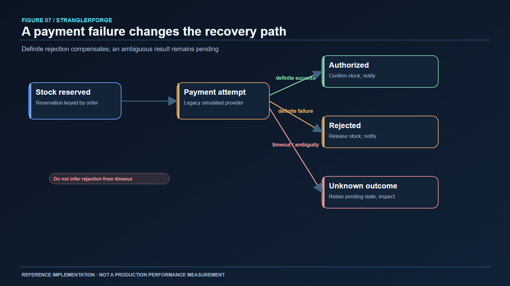
Şekil 9. Hatanın sınıflandırılması kurtarmayı belirler. Belirsiz ödeme sonucu kesin ret sayılmaz.StranglerForge beş uygulama imajı için çok aşamalı Dockerfile'lar, Compose topolojisi, Kubernetes Kustomize overlay'leri, probe'lar ve GitHub Actions kontrolleri sağlar. Referans root olmayan container'lara ve dış Secret başvurularına önem verir. Kubernetes'te uygulama kopyaları büyük ölçüde durumsuzdur; SQL Server, PostgreSQL ve RabbitMQ ise ayrı operasyonel gereksinimleri olan durumlu bağımlılıklardır. Veritabanı migration'ları, sır döndürme, yedekleme ve geri yükleme, rolling Deployment güncellemesine devredilemez.
Phase 10 CI beş imajı derledi, Compose değişken çözümlemesini kontrol etti, Kustomize overlay'lerini render etti ve tek kullanımlık PostgreSQL ile RabbitMQ container'larında altyapı testleri çalıştırdı. Bunlar paketleme ve yapılandırma için değerli kontrollerdir. Tüm uygulama yığınının container içinde başladığını, Kubernetes API'sinin kaynakları kabul ettiğini, ingress'in kümede çalıştığını veya yedek geri yükleme provasının başarılı olduğunu göstermez. Dağıtım runbook'u bu nedenle ortam doğrulamasına başlangıçtır; üretim onayı değildir.
Güvenlik için de aynı kesinlik gerekir. Korunan iç ve idari rotalar, bağımlılık denetimi ve container sertleştirme kontrolleri vardır. Son mühendislik incelemesi yine de son kullanıcı kimliği, daha güçlü servis kimliği, çıkış ağı politikası, sır döndürme ve imaj imzasını açık iş olarak sıralar. Ödemeyi bilerek simüle eden bir referans, ödeme uyumluluğu ima etmemelidir.
Birleştirilmiş main dalındaki Phase 10 CI #31 çalışması 77 çözüm testi, iki canlı RabbitMQ testi ve iki canlı PostgreSQL ağ geçidi koordinasyon testi bildirdi. Son grup, aynı geçiş otoritesini paylaşan iki ağ geçidi örneğini, eski sürümle yazmanın reddini ve otorite geri geldikten sonra toparlanmayı kapsar. Mesajlaşma kontrolleri gerçek broker ile outbox yeniden gönderimini, inbox yinelenme davranışını, retry tükenmesini ve hata kuyruğunu çalıştırdı. Orders entegrasyon testleri ayrı PostgreSQL üzerinde yeniden başlama, zaman aşımı, telafi ve kalıcı geçişleri kapsar. Ağ geçidi testleri geçersiz yönlendirmeyi, geri alma reddini, canary ve shadow davranışını ve idari korumayı sınar.
Bu testler bazı hata iddialarını diyagramlardan daha güçlü kılar. Broker kapalıyken stok güncellemesi ile outbox satırının kalıcı kalması işlem sınırını gösterir. Yeniden teslimatta tek denetim yan etkisi idempotency'yi gösterir. İki ağ geçidinin eski durum geçişini reddetmesi koordinasyonun yalnızca süreç içinde olmadığını gösterir. Yine de üretimdeki tüm hata uzayını kanıtlamaz. Kabul matrisi API uyumluluğu ve veri sahipliğini kısmi sayar: yayımlanmış bir OpenAPI fark kapısı veya üretim verisinin son envanteri yoktur.
Depo ayrıca çözümü derler, bağımlılıkları denetler, imajları oluşturur ve dağıtım yapılandırmasını CI'da doğrular. Çalıştırılmış performans benchmark'ı, Kubernetes rollout'u, yedek geri yükleme, tam Collector hattı veya müşteriye dönük yetkilendirme incelemesi kaydedilmemiştir. Gerçek bir uygulamada bunlar hedef ortam kanıtıyla birlikte çıkış ölçütleri olmalıdır.
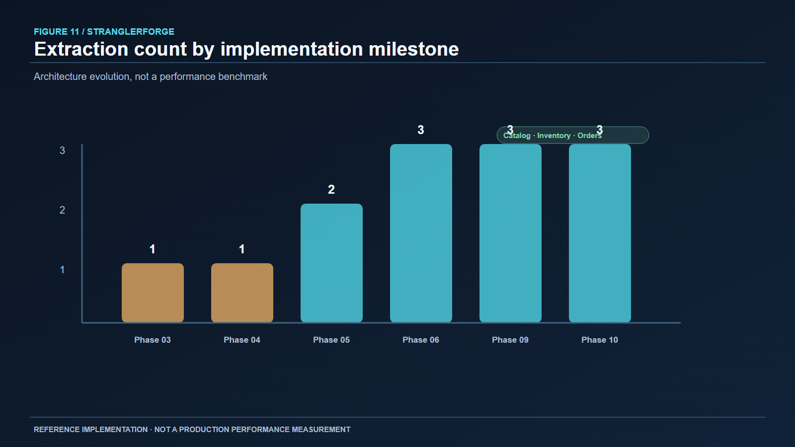
Şekil 10. Performans ölçümü değil, uygulama kilometre taşları: son mimaride Catalog, Inventory ve Orders bağımsız sahip olur.Kademeli geçişin başlıca yararı her değişikliğin etki alanını küçültmesidir. Bedeli bir birlikte yaşama dönemidir. Eski ve yeni kod uyumlu sözleşmeler ister; ağ geçidi sahiplik modeli gerektirir; taşıma araçları ve uzlaştırma ürünün parçası olur. Servis çıkarma yalnızca controller taşıyıp connection string değiştirmek gibi görülürse bu geçiş karmaşıklığı kolayca küçümsenir.
Servis başına veritabanı sahipliği netleştirir ve bir servisin diğerinin değişmezlerini atlamasını önler. Aynı zamanda paylaşılan işlemlerin yerini idempotent komutlar, kalıcı iş akışları ve nihai tutarlılık alır. Siparişin müşteri, fiyat, rezervasyon veya ödeme kararını hızla alması gereken yerde eşzamanlı HTTP yararlıdır; fakat erişilebilirlik ve gecikmeyi bu bağımlılıklara bağlar. Olaylar bazı sonuçları gevşek bağlar ve yeniden oynatmayı kolaylaştırır; buna karşılık broker işletimi, şema evrimi, yinelenme ve hata kuyruğu prosedürleri ekler. Her etkileşim için tek bir üstün iletişim biçimi yoktur.
Saga da bir ödünleşimdir. Açık telafi adımları iş akışını incelenebilir kılar; ancak telafi geçmişi silmez. Ödeme reddedilince stok serbest bırakılabilir, ama sonucu belirsiz ödemeyi teyit olmadan geri almak güvenli değildir. Mimari bu yüzden belirsizlik durumlarına ve insan eliyle uzlaştırmaya yer ayırır. Mutlu yol diyagramından daha karmaşıktır, iş gerçeğine daha yakındır.
Son olarak operasyonel hazır olma, mimari tamamlanmışlığından ayrıdır. Referans güvenli sahiplik kurallarını, kalıcı mesajlaşmayı ve yeniden üretilebilir CI yolunu gösterir. Üretim dağıtımı yine de gerçek kimlik yönetimi, tehdit modelleme, sır yönetimi, yedekleme ve geri yükleme tatbikatı, ölçek testi, nöbet prosedürü ve küme doğrulaması ister. Bağımsız ölçekleme veya dağıtım ihtiyacı olmayan daha küçük sistem için modüler monolit uzun vadede daha iyi seçim olabilir.
Genel giriş noktası YARP'tır. Catalog, Inventory ve Orders ayrı PostgreSQL veritabanları olan bağımsız API'lerdir. Orders fiyat için Catalog'u, rezervasyon için Inventory'yi; müşteri, simüle ödeme ve bildirim için LegacyCommerce'i çağırır. Inventory ürün varlığını Catalog'a sorar. RabbitMQ entegrasyon olaylarını outbox/inbox sınırlarından taşır. Ayrı bir PostgreSQL otoritesi ağ geçidinin geçiş durumunu koordine eder. OpenTelemetry yapılandırılmış gözlemlenebilirlik yığınına iz ve metrik yolu sağlar.
LegacyCommerce ile SQL Server Customers, Payments ve Notifications için etkin kalır. Eski Catalog, Inventory ve Orders verisiyle kodunun tarihsel olarak bulunması, onları yeniden yazıcı yapmak için yeterli değildir. Son diyagramdaki temel ayrım budur: monolitin yaşaması paylaşılan otorite anlamına gelmez. Referans, başarıyı silinen monolit satırlarıyla değil, açık sahiplik sınırlarıyla gösterir.
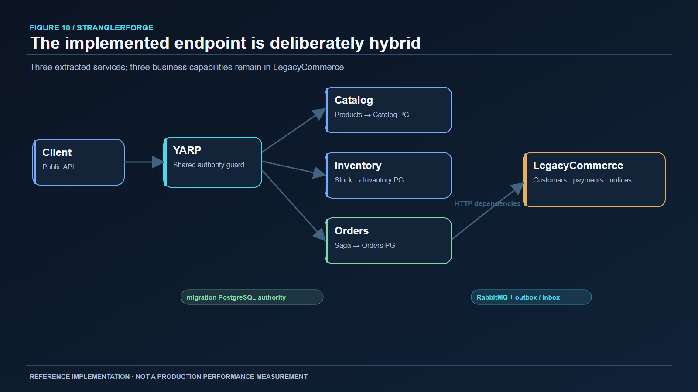
Şekil 11. Gerçekte uygulanan hibrit sistem. Monolit etkin katılımcıdır; Catalog, Inventory ve Orders'ın sahibi modern servislerdir.Strangler Fig geçişinin özü vekil sunucu değildir. Kullanıcılar ve iş akışları çalışmayı sürdürürken otoritenin disiplinli biçimde devredilmesidir. StranglerForge bu devri incelenebilir kılar: kimlikleri korur, tek yazıcı belirler, veri sınırları arasında servis sözleşmeleri kullanır, olay yayımlamadan önce işi kaydeder, yeniden denemeleri idempotent kılar, uzun sipariş sürecini kalıcı tutar ve eski veri sunacak geri alma rotalarını reddeder.
Proje test edilmiş davranışları ve belgelenmiş sınırları olan çalıştırılabilir bir referanstır. En yararlı dersi, güvenli modernizasyonun her sınırda kanıt gerektirmesidir. Kararları ayrıntısıyla incelemek isteyenler StranglerForge deposunda kaynak kodu, ADR'leri, taşıma runbook'larını, testleri ve dağıtım örneklerini bulabilir.
*Ek kaynaklar:* Fowler'ın Strangler Fig yazısı; YARP yapılandırması; RabbitMQ güvenilirlik rehberi; PostgreSQL kilitleme; OpenTelemetry sinyalleri; Kubernetes rolling update.
*İngilizce sürüm:* From Legacy Monolith to Cloud-Native Microservices.